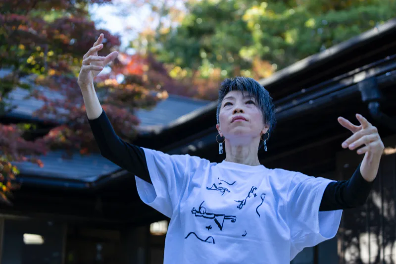
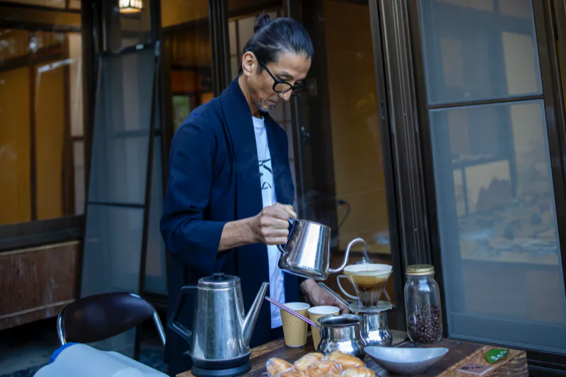

Related events関連イベント
Events held during the exhibition in the Rest Building, the hut in its courtyard, the History and Folklore Museum and the library, following the catalogue. Related events, in date order; events held during the exhibition; lectures held after the exhibition.
- 11.12025 sat 14:00–15:30
Workshop “MITATE”
Creation begins with imagination. Participants created works on the theme of mitate, giving something the appearance of something else.
- Instructor
- Eiji Watanabe (artist)
- Venue
- Obu City History and Folklore Museum, 2F exhibition room
- Admission
- 200 yen
- Participants
- 11

Workshop “MITATE,” Obu City History and Folklore Museum, 2025.11.1Photo courtesy of Art Obulist Executive Committee - 11.152025 sat 14:00–15:30
Performance “Mondori-an – WANA-Show”
Eiji Watanabe revived the “Mondori-an” hut once built by Akio Suzuki, as an homage. Suzuki and the dancer Hiromi Miyakita, both invited artists in 2021, returned to Obu for a performance that set out from the hut.
- Performers
- Akio Suzuki (sound artist), Hiromi Miyakita (dancer)
- Venue
- Courtyard of the Rest Building, Okura Park, at “mo n do ri – an transformed”
- Admission
- Free
- Participants
- Approximately 50

Akio Suzuki, Performance “Mondori-an – WANA-Show,” 2025.11.15Photo: Kenji Aoki 
Hiromi Miyakita, Performance “Mondori-an – WANA-Show,” 2025.11.15Photo: Kenji Aoki - 11.222025 sat 14:00–15:30
Artist talk “We Two are Tacticians”
The artist and the scientist talked about their respective work, and about the intrigue that ensues from the encounter between two disparate genres.
- Performers
- Eiji Watanabe (artist), Eiji Watanabe (scientist)
- Moderator
- Satsuki Yamamoto (curator)
- Venue
- Rest Building, Okura Park
- Admission
- Free
- Participants
- Approximately 50

Artist talk “We Two are Tacticians,” Rest Building, Okura Park, 2025.11.22Photo: Kenji Aoki - 11.24·252025 mon·tue 10:00–15:00drop in any time
Prefectural Residents’ Day school holiday: participatory event “Fragment Badge”
Participants found their favorite “fragments” in works by the two Eijis, drew them, and turned them into original button badges.
- Venue
- Courtyard of the Rest Building, Okura Park
- Admission
- 200 yen
- Participants
- 21

Badges made at “Fragment Badge,” 2025.11.24–25Photo courtesy of Art Obulist Executive Committee - 12.72025 sun 14:00–15:30
Discussion: Eiji Watanabe vs Masahiko Haito, “Skim off the scum”
The conversation ranged from the first meeting of artist and curator to anecdotes from the Triennale.
- Performers
- Eiji Watanabe (artist), Masahiko Haito (curator, former director of the Aichi Prefectural Museum of Art)
- Venue
- Rest Building, Okura Park
- Admission
- Free
- Participants
- 50


Events held during the exhibition会期中の催し
- throughout2025.11–12 pop-up
Pop-up at the allobu library, Obu Cultural Exchange Center
The artist’s “Butterfly’s-Eye View” was shown in a glass case in the library.
- Venue
- allobu library, Obu Cultural Exchange Center
- Work
- Eiji Watanabe (artist), “Butterfly’s-Eye View”
- 5days2025.11–12 13:00–16:00
Pop-up café: mamedoi “Shuchō Kissa in obu”
A pop-up café opened in the hut “mo n do ri – an transformed” in the courtyard of the Rest Building, serving freshly brewed coffee to many visitors.
- Dates
- Saturday, November 1, 8, 15 and 22, and Sunday, December 7, 13:00–16:00
- Venue
- “mo n do ri – an transformed”

Pop-up café mamedoi, “mo n do ri – an transformed”Photo: Kenji Aoki - throughout2025.11.1–12.7 open days
Tiny shop the W Eiji
A shop in the hut “mo n do ri – an transformed” where visitors could make and buy Art Obulist-exclusive items: handmade T-shirts and button badges based on drawings by the two Eijis, and a capsule-toy machine with ceramic airplanes, optical illusions as solid objects, and other items related to the pair’s work and research.
- Venue
- “mo n do ri – an transformed”

㉔ “mo n do ri – an transformed” and Tiny shop the W EijiPhoto: Kenji Aoki

{kind=link}
{kind=link}
After the exhibition会期後
- 3.282026 sat 16:30–18:00
counter lecture vol.02 “Analyze W Eiji”
A lecture by the physicist Masaki Watabe analyzing the activities of the two Eiji Watanabes. Its content is collected on the website of the same name.
- Instructor
- Masaki Watabe (physicist, National Institute for Basic Biology)
- Venue
- Jingu339 (3-3-9 Jingu, Atsuta-ku, Nagoya)
Analyze W Eiji (Masaki Watabe)

Flyer for counter lecture vol.02 “Analyze W Eiji”, 2026.3.28 Jingu339Flyer: Eiji Watanabe (artist) / courtesy office SONO - 8.202026
The two Eijis lecture together at Aichi University of Education
A record of the summer intensive course at Aichi University of Education, where Eiji Watanabe and Eiji Watanabe took the stage side by side.